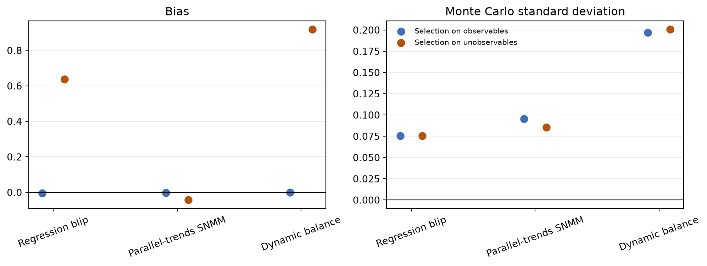

Regression blips, parallel-trends SNMMs, and dynamic covariate balance
Dynamic causal estimators must respect the order in which treatment, outcomes, and time-varying confounders are observed. Two methods below parameterize the effect of a treatment blip at one time on later outcomes; the third estimates a mean final outcome under an entire treatment path. All avoid interpreting an ordinary autoregressive distributed-lag regression as causal when it conditions on variables caused by earlier treatment.
This page documents three deliberately distinct estimators:
RegressionBlip is the recursive regression g-estimator described by Blackwell and Glynn (2018). It is identified by sequential ignorability.
ParallelTrendsSNMM implements the cross-fitted, doubly robust additive estimating equations of Shahn et al. (2022). It is identified by a time-varying conditional parallel-trends restriction.
DynamicCovariateBalance implements the recursive potential-projection and sequential weighting construction of Viviano and Bradic (2026). It targets a mean potential outcome under a specified treatment path and uses sequential ignorability plus linear potential projections.
Two timing conventions
The methods use different observation orderings, so their array contracts are intentionally different.
Contemporaneous regression blips
RegressionBlip treats \(A_t\) as capable of affecting \(Y_t\). Both arrays therefore have shape (n_units, n_periods). Let \(\bar A_t=(A_0,\ldots,A_t)\). For an additive, history-invariant impulse response,
At stage \(j\), the implementation regresses \(\widetilde Y_t^{\,j}\) on \(A_{t-j}\) and information available when \(A_{t-j}\) was assigned: \(A_{t-j-1}\), \(Y_{t-j-1}\), optional user-supplied history \(L_{t-j}\), and optional outcome-time indicators. The coefficient on \(A_{t-j}\) is \(\widehat\gamma_j\). The recursion avoids conditioning on \(L_t\) when estimating the effect of \(A_{t-j}\) if \(L_t\) could have been caused by that treatment.
The identifying restriction is sequential ignorability. For every treatment history and assignment time \(s\),
\[
\{Y_r(\bar a_r):r\ge s\}\perp A_s\mid V_s,
\]
where \(V_s\) contains the treatment and covariate history sufficient to remove confounding of \(A_s\). The assumption permits \(A_s\) to affect future covariates and future treatment.
Forward parallel-trends blips
ParallelTrendsSNMM follows the paper’s ordering in which \(Y_m\) is observed before \(A_m\), so \(A_m\) first affects \(Y_{m+1}\). If treatment has \(T\) columns, the outcome must have \(T+1\) columns.
For a reference regime \(g\), the general blip function is
The implemented first-tier model uses the untreated regime, an additive linear blip, and a common coefficient by treatment-to-outcome horizon \(h=k-m\):
This is a statement about counterfactual trends, not counterfactual levels. Time-constant unobserved causes of treatment and outcome levels are allowed if they do not also modify untreated trends. A supplied history[:, m, :] must be available at assignment time \(m\). In particular, conditioning on the current outcome level \(Y_m\) can destroy the intended parallel-trends interpretation; lagged outcome increments may be admissible where levels are not.
Orthogonal estimating equation
Let \(\pi_m(L_m)=E(A_m\mid L_m,\bar A_{m-1})\) and
Its expectation is zero if either the conditional treatment mean or the conditional blipped-trend mean is correctly specified. For a linear blip, write
where \(Z_{imk}\) places \(A_{im}-\widehat\pi_m(L_{im})\) in the coordinate for horizon \(k-m\). Treatment, trend, and blip-design conditional means are fitted with ridge regressions on training folds and evaluated on held-out units. The covariance is an influence-function sandwich over unit-level sums of the orthogonal scores.
Dynamic covariate balance
Viviano and Bradic target the mean final potential outcome under a complete treatment path,
\[
\mu_T(d_{1:T})=E\{Y_T(d_{1:T})\}.
\]
Let \(H_{it}\) contain information observed before \(A_{it}\), including baseline covariates, prior treatment, and any relevant lagged outcomes or time-varying covariates. Their potential local-projection model is
The fitted projections are obtained backwards. At \(t=T\), regress \(Y_T\) on \(H_T\) among units with \(A_{1:T}=d_{1:T}\). At every earlier \(t\), regress the next fitted conditional mean \(H_{t+1}'\widehat\beta_d^{(t+1)}\) on \(H_t\) among units with \(A_{1:t}=d_{1:t}\). The implementation uses ridge regularization with an unpenalized intercept; the paper’s high-dimensional theory instead permits appropriately convergent lasso projections.
Starting from \(\widehat\gamma_{i0}=1/n\), period-\(t\) weights solve the exact-balance special case
Thus the first-period path group is balanced to the whole sample. At later periods, the longer path group is balanced to the preceding path group after applying the previous period’s weights. DynamicCovariateBalance calls the same autoscaling, bounded quadratic dual map, solver sequence, normalization, and diagnostics used by BalancingWeights(objective="quadratic"); this is one shared calibration engine rather than a second weighting implementation.
Given the recursive predictions \(\widehat q_{it}=H_{it}'\widehat\beta_d^{(t)}\), the augmented path-mean estimator is
The paper permits coordinatewise \(\ell_\infty\) balance slack and explicit high-dimensional tuning. The first package implementation uses exact balance, ridge projections, and the existing scalar weight cap. It reports calibration diagnostics but deliberately does not report an analytic standard error yet; Monte Carlo dispersion or a unit bootstrap is required for uncertainty until the paper’s longitudinal influence-function variance is implemented.
treatment_mode="blip" uses the supplied period-specific treatment directly. treatment_mode="initiation" requires a binary absorbing treatment-status panel, constructs a first-treatment pulse internally, and restricts each assignment-time equation to units not treated before that time. In initiation mode, \(\psi_h\) is the effect at horizon \(h\) of initiating at \(m\) rather than remaining untreated from \(m\) onward, among the relevant initiation history.
DynamicCovariateBalance.fit(...) takes only the final outcome because its estimand is a path-specific final mean. The treatment panel and target path have the same number of periods; history[:, t, :] must contain only pre-treatment information for period \(t\). A path contrast requires two fitted objects, one for each path. summary() reports prefix support, effective sample size, maximum original-scale imbalance, per-period solver status, and the fitted path mean.
The contemporaneous blip is \(\gamma_0=2\). The first-lag blip includes both the direct path and the mediated path through \(Z_t\):
\[
\gamma_1=0.5+1.5(0.8)=1.7.
\]
Code
import numpy as npimport pandas as pdimport crabbymetrics as cmrng = np.random.default_rng(1234)n, periods =2_000, 7a = np.zeros((n, periods))y = np.zeros((n, periods))z = np.zeros((n, periods, 1))for t inrange(periods): a_lag = a[:, t -1] if t else0.0 z[:, t, 0] =0.8* a_lag + rng.normal(size=n) p =1/ (1+ np.exp(-(-0.2+0.8* z[:, t, 0] +0.2* a_lag))) a[:, t] = rng.binomial(1, p) y[:, t] = (2.0* a[:, t]+0.5* a_lag+1.5* z[:, t, 0]+ rng.normal(scale=0.7, size=n) )reg = cm.RegressionBlip(max_lag=1)reg.fit(y, a, z)reg_result = reg.summary()pd.DataFrame({"lag": reg_result["lags"].astype(int),"truth": [2.0, 1.7],"estimate": reg_result["coef"],"conditional_stage_se": reg_result["stage_se"],})
lag
truth
estimate
conditional_stage_se
0
0
2.0
1.981614
0.013754
1
1
1.7
1.637764
0.035863
An ADL regression that includes \(Z_t\) while interpreting the coefficient on \(A_{t-1}\) as its total lagged effect blocks the mediated path and targets \(0.5\), not \(1.7\). Omitting \(Z_t\) instead confounds the contemporaneous effect. The recursive blip regressions change the adjustment time with the causal lag.
Numerical experiment 2: staggered initiation with level confounding
The second design contains an unobserved \(U_i\) that affects both treatment initiation and the untreated outcome level. It does not affect untreated increments. The observed history \(L_{im}\) predicts both initiation and untreated increments:
The initiation response is \((1.0,1.6,2.1)\) at horizons one through three. This violates level ignorability because \(U_i\) confounds initiation and \(Y_{i0}(0)\), but it satisfies the simulated conditional parallel-trends restriction.
Code
rng = np.random.default_rng(91)n, periods =5_000, 6truth = np.array([1.0, 1.6, 2.1])history = rng.normal(size=(n, periods, 1))u = rng.normal(size=n)status = np.zeros((n, periods))first = np.full(n, periods +1, dtype=int)untreated = np.zeros((n, periods +1))untreated[:, 0] =2.0* u + rng.normal(scale=0.4, size=n)for m inrange(periods): untreated[:, m +1] = ( untreated[:, m]+0.35* history[:, m, 0]+ rng.normal(scale=0.5, size=n) ) risk = first > m p =1/ (1+ np.exp(-(-1.2+0.55* history[:, m, 0] +0.65* u))) start = risk & (rng.uniform(size=n) < p) first[start] = m status[first <= m, m] =1.0y_forward = untreated.copy()for i inrange(n):if first[i] < periods:for h, effect inenumerate(truth, start=1):if first[i] + h <= periods: y_forward[i, first[i] + h] += effectpt = cm.ParallelTrendsSNMM( max_horizon=3, treatment_mode="initiation", n_folds=3, seed=7,)pt.fit(y_forward, status, history)pt_result = pt.summary()pd.DataFrame({"horizon": pt_result["horizons"].astype(int),"truth": truth,"estimate": pt_result["coef"],"se": pt_result["se"],})
horizon
truth
estimate
se
0
1
1.0
0.983159
0.009227
1
2
1.6
1.589484
0.016232
2
3
2.1
2.103710
0.022914
diagnostic
moment rows
4.526500e+04
minimum fitted treatment mean
1.000000e-02
maximum fitted treatment mean
6.400915e-01
maximum absolute sample moment
4.106337e-15
Comparative simulation study
The three estimators target different primitive objects. A common scalar comparison is possible in a linear distributed-lag design. There are four treatment decisions, \(t=0,1,2,3\), and the target contrasts are
\[
d^0=(0,0,0,0),\qquad d^1=(0,1,1,1).
\]
Because the final outcome is \(Y_4\), switching from \(d^0\) to \(d^1\) changes the treatments entering at horizons one, two, and three. The common target is therefore
\[
\tau=\mu_4(d^1)-\mu_4(d^0)
=1+0.6+0.4=2.
\]
For each unit, draw mutually independent standard-normal \(X_i,U_i,L_{i,-1},\eta_{it},\varepsilon_{it}\). Let \(\Lambda(v)=1/(1+e^{-v})\), set \(A_{i,-1}=A_{i,-2}=0\), and generate
The observed-selection design sets \(\rho=0\). The history \(H_{it}=(X_i,L_{it},L_{i,t-1},A_{i,t-1})\) then contains the treatment predictors. The fixed \(U_i\) shifts outcome levels but is independent of treatment.
Code
flowchart LR X["baseline X"] --> L["state L_t"] X --> A["treatment A_t"] L --> A AP["past treatment A_(t-1)"] --> A X --> Y["outcome Y_(t+1)"] L --> Y AP --> Y A --> Y
flowchart LR
X["baseline X"] --> L["state L_t"]
X --> A["treatment A_t"]
L --> A
AP["past treatment A_(t-1)"] --> A
X --> Y["outcome Y_(t+1)"]
L --> Y
AP --> Y
A --> Y
The hidden-selection design sets \(\rho=0.6\). The unobserved \(U_i\) now causes both treatment and outcome levels. It does not enter the untreated trend because it cancels from \(Y_{i,t+1}(0)-Y_{it}(0)\). Sequential ignorability fails for the regression-blip and dynamic-balancing estimators, while the time-varying parallel-trends restriction remains plausible.
Code
flowchart LR U["unobserved level U"] --> A["treatment A_t"] U --> Y["outcome Y_(t+1)"] X["baseline X"] --> L["state L_t"] X --> A L --> A AP["past treatment A_(t-1)"] --> A X --> Y L --> Y AP --> Y A --> Y
flowchart LR
U["unobserved level U"] --> A["treatment A_t"]
U --> Y["outcome Y_(t+1)"]
X["baseline X"] --> L["state L_t"]
X --> A
L --> A
AP["past treatment A_(t-1)"] --> A
X --> Y
L --> Y
AP --> Y
A --> Y
For each draw, RegressionBlip estimates \(\tau\) as \(\widehat\gamma_0+\widehat\gamma_1+\widehat\gamma_2\). ParallelTrendsSNMM estimates it as \(\widehat\psi_1+\widehat\psi_2+\widehat\psi_3\). DynamicCovariateBalance fits \(\widehat\mu_4(d^1)\) and \(\widehat\mu_4(d^0)\) separately and differences them.
Sampling distributions for the common final-period path contrast.

Monte Carlo bias and standard deviation separate robustness from efficiency.
Under selection on observables, all three sampling distributions are centered near two. The recursive regression is most efficient in this correctly specified low-dimensional outcome model; the parallel-trends estimator pays for orthogonalization and cross-fitting, while the path-specific dynamic-balancing contrast pays for estimating two increasingly selective path means.
When \(U_i\) enters treatment assignment, the regression-blip and dynamic-balancing estimates inherit the positive level confounding. The parallel-trends estimate remains close to the target because differencing removes \(U_i\). This is not generic robustness to hidden confounding: it relies specifically on \(U_i\) being time invariant and absent from untreated outcome trends.
strict_solver_success_rate
maximum_retained_imbalance
design
Selection on observables
0.81
0.000130
Selection on unobservables
0.76
0.000053
BalancingWeights deliberately retains finite weights when its strict scaled-residual convergence gate is not met. DynamicCovariateBalance propagates that per-period status instead of relabeling the fit as converged. The simulation therefore reports both the strict solver-success rate and the maximum original-scale imbalance among retained fits; a production analysis should inspect both and tighten or relax the calibration design deliberately.
Interpretation and current boundaries
These classes do not estimate the same object under interchangeable assumptions.
Feature
RegressionBlip
ParallelTrendsSNMM
DynamicCovariateBalance
Identifying restriction
Sequential ignorability
Time-varying conditional parallel trends
Sequential ignorability plus potential projections
Primitive target
Lag-specific additive blips
Horizon-specific additive blips
Mean final outcome under one path
Outcome timing
\(A_t\) may affect \(Y_t\)
\(A_m\) first affects \(Y_{m+1}\)
History precedes \(A_t\); final outcome supplied separately
Nuisance strategy
Recursive outcome regressions
Cross-fitted treatment and trend regressions
Recursive potential projections plus sequential calibration
Robustness
Outcome-regression specification
Doubly robust orthogonal moment
Product of projection error and imbalance
Unobserved level confounding
Generally not allowed
Allowed when it does not confound untreated trends
Generally not allowed
Inference
Stagewise unit-clustered SE
Unit-level influence-function sandwich
Not yet implemented; use a unit bootstrap
The initial implementation is intentionally narrow:
The two blip estimators use additive linear effects, with one coefficient per lag or horizon. Dynamic balance instead estimates one path mean at a time.
ParallelTrendsSNMM uses ridge nuisance regressions and a conditional-mean treatment model. Flexible Python callbacks are not yet part of the Rust boundary.
RegressionBlip reports unit-clustered uncertainty conditional on earlier recursive blip estimates. A unit block bootstrap is required for joint recursive inference.
In ParallelTrendsSNMM, cross-fitting is over units, never unit-period rows.
DynamicCovariateBalance implements the paper’s full-interaction recursion with ridge, exact balance, and the package’s quadratic calibration geometry. It does not yet implement the paper’s lasso tuning, coordinatewise approximate-balance program, or analytic longitudinal variance.
None of the estimators makes parallel trends or sequential ignorability testable. The analyst still owns the history set, timing, treatment coding, positivity argument, path support, and effect specification.
References
Blackwell, Matthew, and Adam N. Glynn. 2018. “How to Make Causal Inferences with Time-Series Cross-Sectional Data under Selection on Observables.” American Political Science Review 112(4): 1067–1082. Paper.
Shahn, Zach, Oliver Dukes, Meghana Shamsunder, David Richardson, Eric Tchetgen Tchetgen, and James Robins. 2022. “Structural Nested Mean Models Under Parallel Trends Assumptions.” arXiv:2204.10291.
Viviano, Davide, and Jelena Bradic. 2026. “Dynamic Covariate Balancing: Estimating Treatment Effects over Time with Potential Local Projections.” First circulated 2021. arXiv:2103.01280.